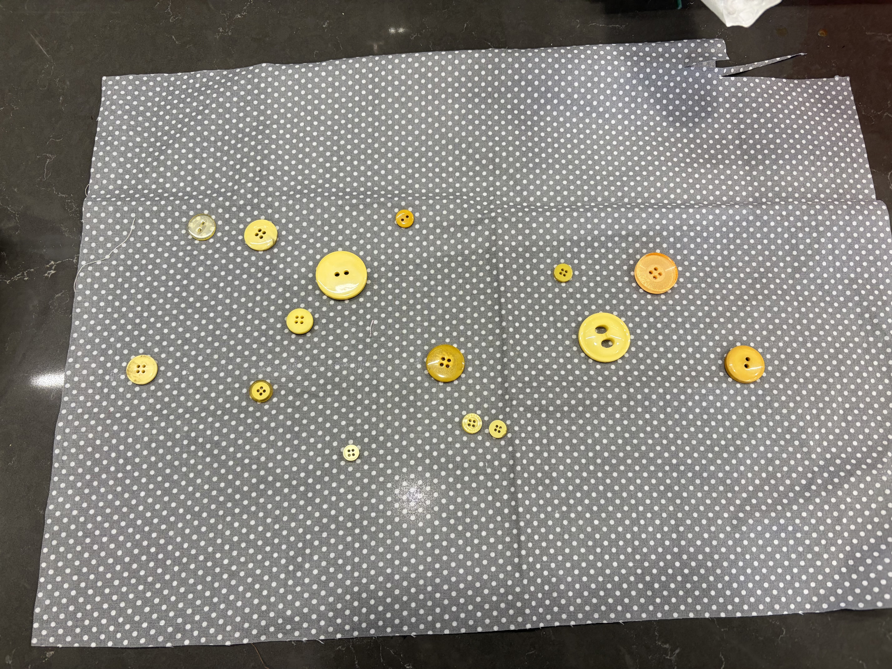
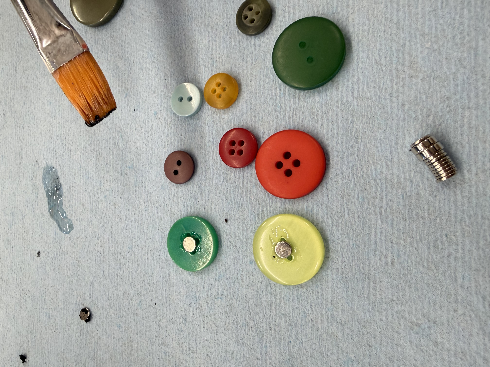

Where the idea came from
While messing around in the lab, I was fiddling with a box of loose buttons when a handful spilled onto a fabric. Scattered like that, I think they looked like stars in the night sky.

That was it — a game where you toss "stars" onto the board and try to find constellations among them.
I liked the look of buttons for stars, but they kept bouncing all over the place when I dropped them onto the board… what should I try?
↺ tried this first I glued small magnets onto the backs of the buttons. They stuck to the board nicely — but then I realized the buttons all stick to each other when stored together in a small box. Not quite it.

✓ this is what actually worked I tried laser-cutting the stars out of acrylic instead of using buttons. They're lighter, don't roll away, and don't clump together in storage — exactly what the game needed.